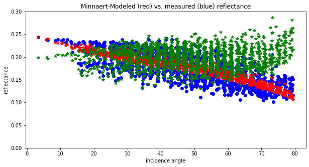
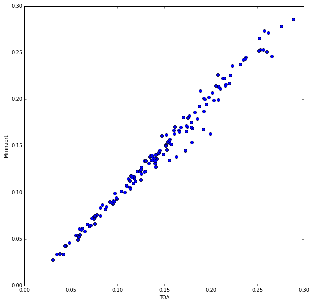

Recoding of image sequence management
Reprocessed MC11 in one piece not (E/W):
~ 100GB pan, 170 GB hsv
#master adjustments file
n_images=206
sequence={image,bgsd,adj_bgsd,contrast_stretch_percent,fill_gaps
0018_0000 0.0110 0.0598 +50 -
0103_0009 0.0114 0.0547 +60 s1-s2-p1-p2
0155_0001 0.0107 0.0122 +60 s2
0401_0001 0.0343 - +35 -
0890_0000 0.0141 - +30 s1-s2
0901_0000 0.0130 - +20 -
0912_0000 0.0125 - +20 -
0923_0000 0.0121 - +20 -
Sequenced, processed HRSC mosaic mc21 level3 (195 images)
Top-of-atmosphere (TOA) vs. Minnaert albedo
Top-of-atmosphere (TOA) vs. Minnaert albedo
Commited yesterday!